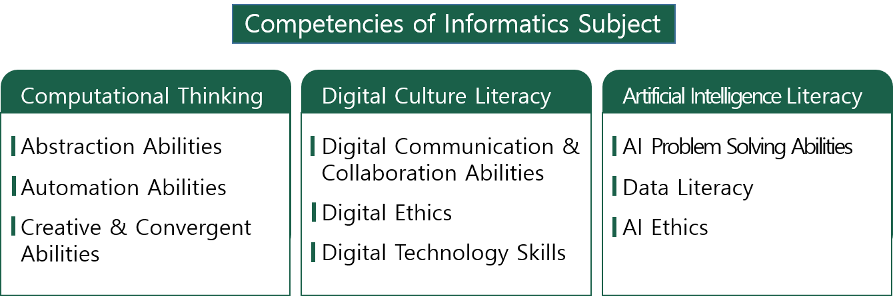

2022 Revised Informatics National Curriculum in South Korea
[Overview of Curriculum Design] - Middle School
The informatics curriculum is designed to reflect the academic identity that is expanding its scope, the national and social requirements of the digital transformation era, and to strengthen the capacity to actively respond to future social changes. Among the core competencies presented in the 2022 Revised Curriculum Outline, 'computational thinking,' 'digital culture literacy,' and 'artificial intelligence (AI) literacy' were set as competencies for informatics education in conjunction with 'knowledge information processing,' 'creative thinking,' 'cooperative communication,' and 'community competence,' and the lower competencies were organized in a form that encompasses the higher competencies.

'Computational thinking', which is the ability to discover and analyze problems and propose new methodologies to solve problems in real life and various academic fields based on problem solving using computing, and 'AI literacy', which is the ability to solve problems through AI based on human-centered AI ethics and understanding of data that seeks coexistence between humans and AI, are linked to the general competencies of 'knowledge information processing' and 'creative thinking'. 'Digital culture literacy', which is the ability to communicate and collaborate based on digital technology with ethics and citizenship as a member of a digital society, is a competency directly linked to 'AI literacy' and 'cooperative communication' and 'community competence' in the general theory.
Through the organization system of the informatics course, we have considered a virtuous cycle of achieving the goals of the information course and cultivating curricular competencies. In other words, we have presented a structure so that the competencies of the course can be expressed through the goals of 'developing the ability to process data based on the understanding of computing systems that handle data and information in the digital world', 'developing the attitude of understanding and practicing the importance of automation to discover and understand problems, design various solutions, and implement them through programs to solve problems using computing', and 'practicing ethics to live in the digital world, understanding the changes in the world caused by artificial intelligence, and having the ability and attitude to explore and solve problems that can be solved through artificial intelligence'.
The Nature and Objectives section specifies the objectives of the subject based on the need and role of informatics subject and its academic identity. The content system and achievement standards organized the main contents to achieve the curriculum goals, and the teaching, learning, and assessment presented the principles and specific methods of teaching, learning, and assessment to help achieve the achievement standards based on the content system.
The five domains of informatics subject are 'computing systems', 'data', 'algorithms and programming', 'artificial intelligence', and 'digital culture', which are presented in a form to achieve the core competencies and goals of the subject. The 5th and 6th grade (Information) course was organized into the 'Digital Society and Artificial Intelligence' area, and was linked to the middle school informatics course. Based on the understanding of the basic elements that make up a 'computing system' and the formation of literacy on 'data', which is the basis of artificial intelligence, students are taught to solve problems through 'algorithms and programming' and 'artificial intelligence'. Throughout this process, the knowledge, understanding, processes, skills, values, and attitudes required to be a member of a society that enjoys 'digital culture' are cultivated. In other words, while the areas are linked in parallel, the abilities and target capabilities pursued through each area are differentiated.
The 'Big ideas' of the informatics course were selected in consideration of the competencies of the course, to achieve the goals of the organized areas, and to enable learners to acquire, generalize, and transfer their learning through in-depth study. The selected contents were judged on their importance as knowledge, social value, and usefulness. Finally, the contents were organized to include a future-oriented perspective, such as how the knowledge or skills acquired by learners can have a transfer effect on society.
In the content system of the informatics course, 'Knowledge and Understanding' selected contents that are core to the curriculum knowledge, and 'Process and Function' considered the characteristics of the course where procedural knowledge is considered important. In other words, along with 'Knowledge and Understanding', procedural knowledge with an inquisitive nature that can support in-depth learning was selected. ‘Values and attitudes’ were selected to be internalized through the entire process of information courses that foster core competencies for the digital society. As the three categories are interrelated, the objectives to be acquired through these areas are organized so that they can be connected and completed through achievement standards.
Teachers should understand that the development of competencies in informatics education is only possible when learners fulfill the set performance standards. During the teaching and learning process, it is important to identify learners' digital competencies and incorporate them into lesson design, as their understanding of the content may vary depending on their level of digital competency. Considering the transferable nature of learning outcomes to real life and other disciplines, it is important to design original curricula to enable deeper learning through linkages, such as integration of subject-specific content with other curricular content.